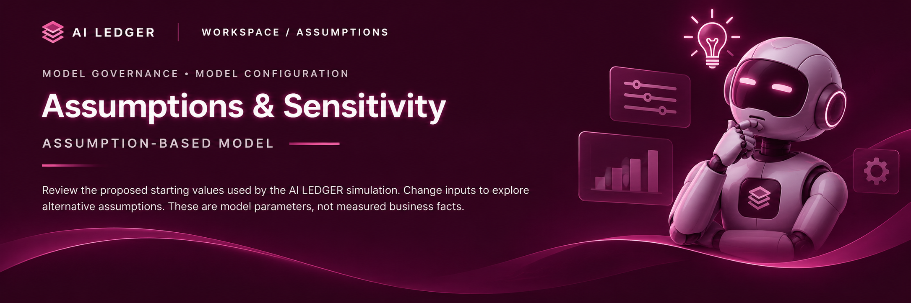

Cost & Risk Parameters
Default values are illustrative assumptions.

Default values are illustrative assumptions.
Changes to these assumptions trigger the Python-based SQL model and Monte Carlo simulation. Updated outputs are exported for the dashboard. All results remain illustrative and depend on the stated modelling assumptions and synthetic data.
All outputs are synthetic estimates, not verified real-world results.
← Back to Overview